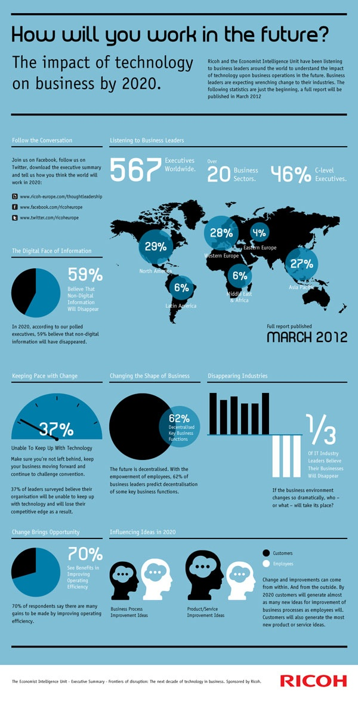
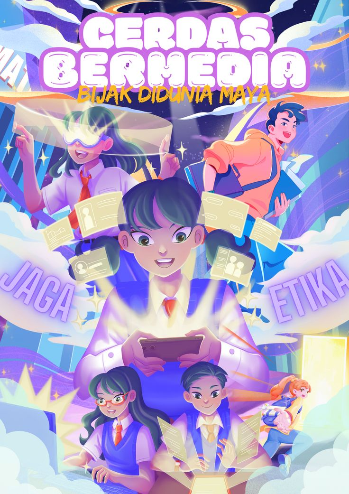
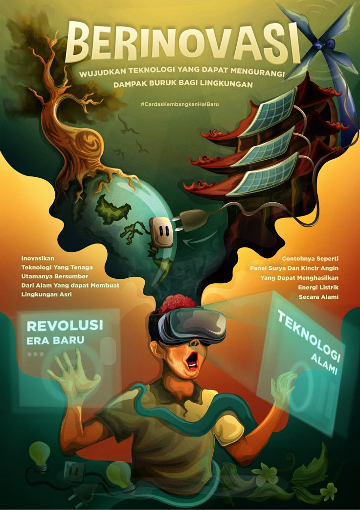
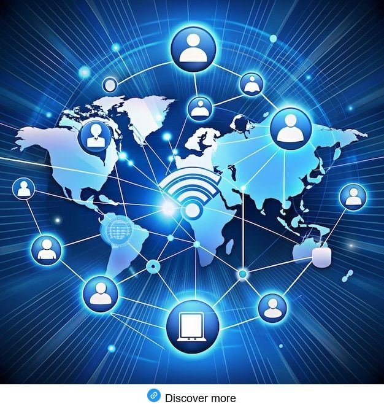
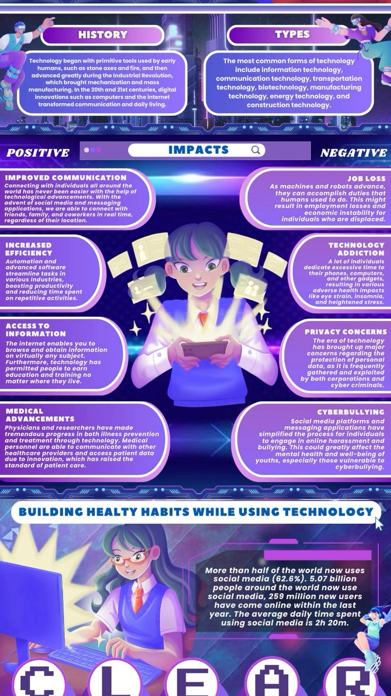
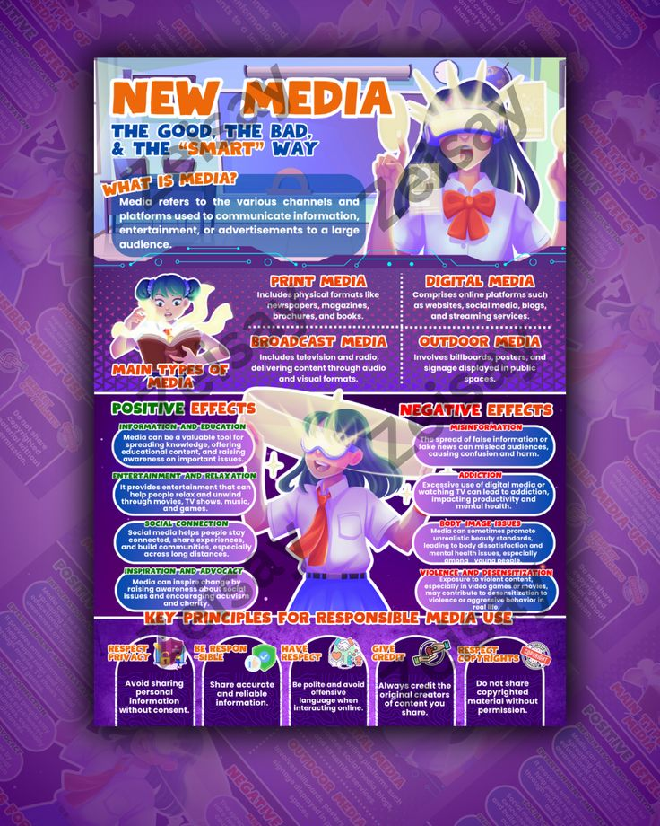
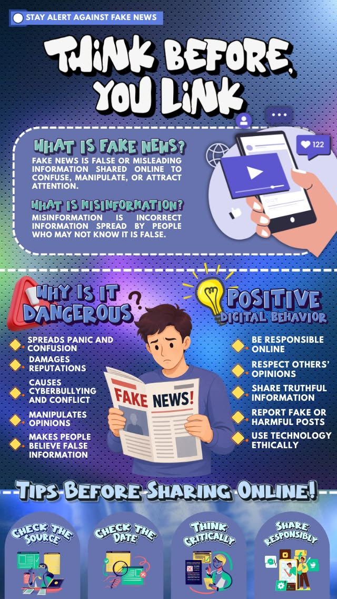
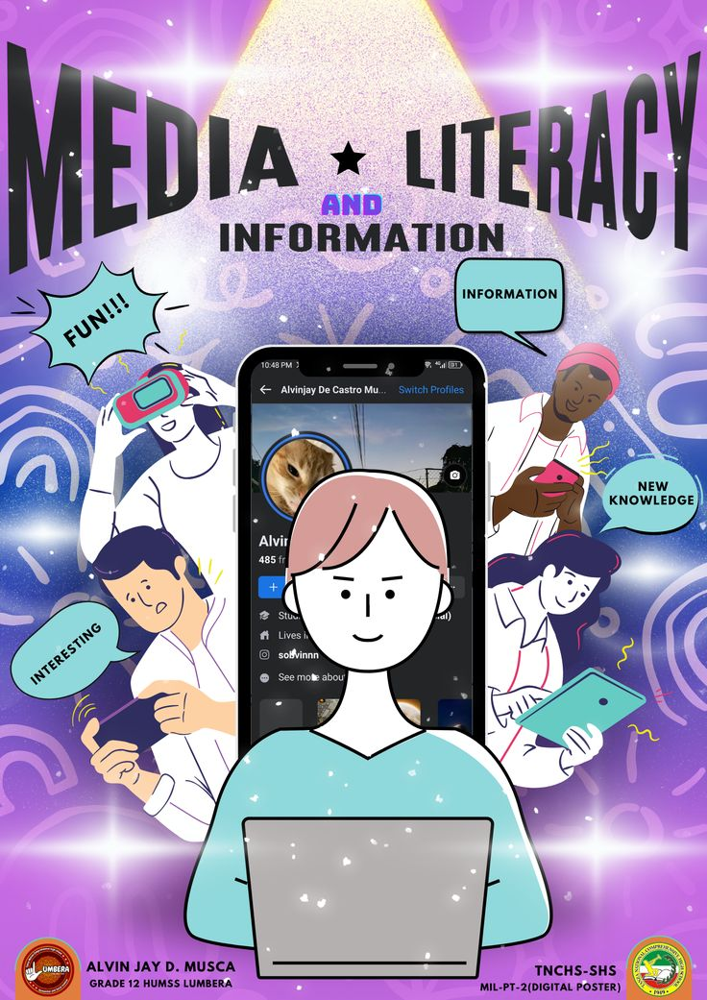

Major Applications
IT is embedded in education, healthcare, banking, entertainment, transport, government, and agriculture: automating tasks, enabling new services, and improving decision-making everywhere.
Information Technology with Communication
Discover how Information Technology transforms communication and contributes to a smarter, more sustainable future.
Information Technology is the study, design, and use of computers and telecommunications to store, retrieve, transmit, and manipulate data. It is the invisible engine behind nearly every modern service we rely on.
Information Technology (IT) covers every technology used to create, process, store, secure, and exchange information. From the smartphone in your pocket to the data centers that power the internet, IT is how information is captured, moved, and transformed into value.
IT drives productivity, connects people across distances, protects critical data, and fuels innovation in education, health, government, and business. Understanding IT is understanding how the modern world operates, and how to build its future.
IT is embedded in education, healthcare, banking, entertainment, transport, government, and agriculture: automating tasks, enabling new services, and improving decision-making everywhere.
The shift of businesses and services to digital tools: moving processes online, automating workflows, and using data to guide every decision.
Systems that learn from data to recognize patterns, understand language, and make smart decisions, from assistants to disease diagnosis.
Storing and processing data on remote servers accessed over the internet: scalable, cost-effective, and available from anywhere.
Protecting systems, networks, and data from attack. Encryption, firewalls, and awareness keep the digital world trustworthy.
Everyday objects connected to the internet: sensors in homes, farms, and cities that collect data and act on it automatically.
Communication is the exchange of information, ideas, and emotions between people. It is how individuals, communities, and institutions understand one another, and technology has radically expanded how far and how fast that exchange can travel.
Verbal: spoken words in person, by phone, or on video. Non-verbal: body language, tone, and facial expressions. Written: letters, reports, and emails. Visual: charts, signs, and symbols that convey meaning at a glance.
Clear communication builds trust, drives teamwork, prevents conflict, and speeds up decisions. It matters in education, health, business, and government, where outcomes depend on the quality of communication.
Information Technology does not replace communication; it supercharges it. Together they create a connected world where ideas, people, and organizations interact instantly, securely, and at any distance.
The global network that connects billions of devices, making instant worldwide communication possible.
Teams share documents, spreadsheets, and ideas in real time, editing the same file from anywhere on Earth.
Formal email and instant messaging deliver messages in seconds, preserving a written record.
Platforms that broadcast ideas to millions and let communities form around shared interests.
Face-to-face meetings without travel, shrinking distance and reducing time lost to commuting.
Targeted, measurable campaigns that reach the right audience at the right moment.
Chatbots, translators, and assistants that respond instantly and personalize every interaction.
Complete teams operating from home offices, connected by the same digital tools.
Classrooms without walls: lessons, lectures, and courses available to any learner anywhere.
Enterprise tools for meetings, projects, and documents that keep companies moving in sync.
Warnings, alerts, and coordination that reach people in minutes during disasters.
The first electrical communication across long distances.
Voice carried live over wires, the start of real-time speech.
The network that grew into the internet.
Anyone could publish, browse, and connect online.
Smartphones and social platforms put communication in every pocket.
Instant translation, smart assistants, and ultra-fast wireless networks.
Information Technology and Communication give environmental science powerful new eyes and voices: monitoring the Earth, spreading awareness, and mobilizing action faster than ever before.
Sensors and satellites continuously track temperature, rainfall, and air quality across the globe.
Networks of low-cost devices report pollution, soil moisture, and weather in real time.
Social media and digital media spread environmental messages to millions in moments.
Orbiting satellites image the Earth and relay data from even the most remote regions.
Precise positioning tracks wildlife, maps deforestation, and guides disaster response.
Alerts for typhoons, floods, and earthquakes reach phones and radios within seconds.
Online courses and interactive content teach sustainability to classrooms everywhere.
Environmental data is recorded, analyzed, and published digitally: accurate and accessible.
Digital documents and signatures replace paper, saving forests and reducing waste.
Researchers worldwide share climate and biodiversity data, accelerating discovery.
When IT and communication meet, they do more than connect people; they reduce the footprint of human activity. Every virtual meeting and digital document is a small step toward a more sustainable world.
Emails, e-books, and digital forms replace paper documents, saving millions of trees each year.
Fewer commutes and deliveries mean cleaner air and a smaller carbon footprint.
Video calls replace flights and drives, saving time, fuel, and emissions.
Sensors optimize traffic, lighting, and waste collection to cut energy and pollution.
Renewable energy systems are monitored and optimized remotely using IT networks.
Smart grids and intelligent appliances consume energy only when needed.
Online campaigns mobilize communities around clean-ups, recycling, and conservation.
Long-lived digital records outlast paper and require no physical storage or transport.
Emerging AI and IoT systems will make environmental protection smarter still.
From classrooms to hospitals to city streets, the union of Information Technology and Communication is changing how real people live, learn, work, and stay safe.
Interactive courses, virtual classrooms, and instant feedback make education available to anyone with a connection.
Authorities broadcast weather, earthquake, and public-safety warnings straight to citizens' phones.
Teams worldwide co-edit documents, run meetings, and manage projects from a shared digital space.
Documents, permits, taxes, and public records are handled online: fast, transparent, and paperless.
Patients consult doctors by video, share records digitally, and receive care without traveling.
Connected sensors track air, water, and weather, giving scientists continuous data streams.
Traffic lights, streetlights, and utilities self-adjust using live data, improving life for everyone in the city.
A visual library supporting the brochure, with placeholders for images, infographics, videos, diagrams, and case studies.
 Image
Image
Image
Image
Image
Image
Image
Image
Image
ImageTools and platforms used to design, develop, and document this project, formatted in APA style.
This website is the official digital companion to the IEC tri-fold brochure “Successfully Connected: Information Technology with Communication.” It serves as an educational extension of the brochure, expanding its key ideas with richer explanations, interactive visuals, and supporting content.